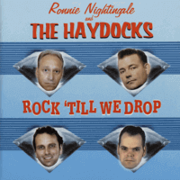

Ronnie Nightingale and the Haydocks - Rock 'Till We Drop (Album, 2001)
01 - Atmosphere (2:29)
02 - Rock Till We Drop (1:51)
03 - Why (1:37)
04 - Bop Boogie Bop (1:49)
05 - Two Miles Down The Road (2:03)
06 - Who's The One (1:54)
07 - Rockin' With Nina (1:30)
08 - Boogie Bop Dame (2:09)
09 - I Wish (2:18)
10 - Put Your Cat Clothes On (2:21)
11 - Good Boy Stomp (3:02)
12 - Rockin' At The Wild Bunch (2:25)
13 - Rock & Roll Man (1:50)
14 - Teddy Boy Rock & Roll (2:17)
15 - Night After Night (2:14)
16 - Tornado (2:05)
17 - Waiting For My Baby (3:42)
18 - Party Time (2:00)
19 - Hang Around No More (3:09)
20 - Serious Trouble (2:36)
21 - Bop Pretty Baby (2:18)
22 - Harry (2:00)
© Rarity Records :: [C192675]
Notes
Review
166/366 (Project 366)
Very atmoshperic Rock'n'Roll Revival with huge spices of Teddy Boy Rockabilly, Bop, Boogie and general rockin' craze. Straightforward tunes, expected lyrics, high energy and many more.